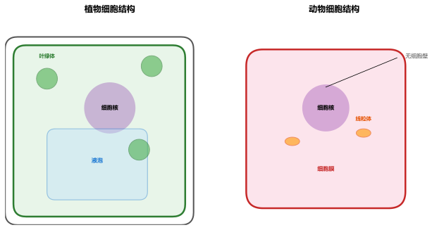
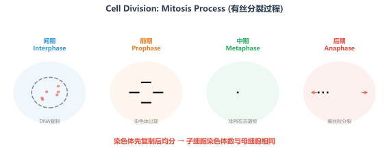

使用说明：每个专题包含核心知识点、例题（点击"显示解析"看详解）、课后练习。标注⚠️的是高频易错点，请格外留意。专题顺序建议按序号学习，前后知识有衔接。
专题一：细胞的结构与功能
细胞学基础
细胞是生物体结构和功能的基本单位（除病毒外，生物体都由细胞构成）。初中阶段重点掌握植物细胞与动物细胞的结构异同、显微镜的使用方法以及细胞各部分结构的功能。

显微镜的结构（左）和成像原理（右）——放大倍数越大，视野越暗、看到的细胞越少
一、显微镜的使用
| 操作步骤 | 要点 | 注意事项 |
|---|
| 取镜安放 | 右手握镜臂，左手托镜座 | 轻拿轻放，不可倾斜 |
| 对光 | 选低倍物镜→大光圈→调反光镜 | 看到明亮圆形视野为成功 |
| 放置标本 | 标本正对通光孔中央 | 压片夹压住玻片 |
| 调焦观察 | 粗准焦螺旋下降→上升调焦→细准焦螺旋清晰 | 下降时眼睛注视物镜防压碎 |
成像特点
倒像（上下左右皆颠倒）
如"b"在视野中是"q"
放大倍数
目镜 × 物镜
目镜越长倍数越小；物镜越长倍数越大
高倍镜换后变化
视野变暗·细胞变少·变大
光线通过更少的细胞
二、植物细胞与动物细胞的比较
| 结构 | 植物细胞 | 动物细胞 | 主要功能 |
|---|
| 细胞壁 | ✅ 有 | ❌ 无 | 保护和支持细胞 |
| 细胞膜 | ✅ 有 | ✅ 有 | 控制物质进出 |
| 细胞质 | ✅ 有 | ✅ 有 | 进行生命活动的场所 |
| 细胞核 | ✅ 有 | ✅ 有 | 含遗传物质，控制生命活动 |
| 叶绿体 | ✅ 有（绿色部分） | ❌ 无 | 光合作用的场所 |
| 液泡 | ✅ 有（大而明显） | ❌ 无（或有小而多） | 储存细胞液（色素、糖分等） |
| 线粒体 | ✅ 有 | ✅ 有 | 呼吸作用场所，提供能量 |

植物细胞（左）与动物细胞（右）结构对比——记住：植物特有细胞壁、叶绿体、大液泡
记忆口诀："壁叶泡，植物三宝；动植物都有，膜质核线粒"——植物细胞有细胞壁、叶绿体、大液泡，动物没有；细胞膜、细胞质、细胞核、线粒体两者都有。
⚠️ 易错点：①植物根尖细胞（不见光的部分）没有叶绿体；②所有细胞都有线粒体，不是只有动物细胞才有；③细胞膜是"控制"物质进出而不是"阻止"——有用的进，有害的挡。
【例题1】用显微镜观察洋葱表皮细胞，在视野中看到"b"字，实际玻片上写的是什么？若发现物像偏右上方，应往哪个方向移动玻片？
解析：
(1) 显微镜成倒像，上下左右都颠倒。"b"旋转180°后是"q"。
(2) 物像偏右上方 → 实际物体在左下方 → 应将玻片向右上方移动（"物像偏哪，玻片向哪移"）。
速记法：想象把写有字的纸旋转180°——倒过来看。或者用字母对称法：b/q、p/d、上/下互变。
【例题2】菠菜叶放在开水中煮过，水变成绿色，而没煮过的菠菜叶放在冷水中，水不变绿，这是为什么？
解析：细胞膜能控制物质进出。煮过的菠菜细胞膜被破坏，失去了控制能力，细胞内的色素（叶绿素）渗出到水中，所以水变成绿色。没煮过的细胞膜完好，色素不能出来。
结论：细胞膜的功能——控制物质进出，但高温会破坏细胞膜的结构。
• 显微镜的目镜为10×、物镜为40×时，放大倍数为多少？此时视野中看到4个细胞，若换为10×物镜还能看到约多少个？
• 制作洋葱表皮细胞临时装片时，为什么在载玻片上滴清水？而制作人口腔上皮细胞装片时却滴生理盐水？
专题二：生物体的结构层次
从细胞到个体
从受精卵发育成完整的生物体，经历了细胞分裂、细胞生长和细胞分化三个关键过程。理解"细胞→组织→器官→系统→个体"的层次关系是解题的基础。

细胞有丝分裂四阶段——染色体先复制后均分，保证子细胞染色体数目与母细胞相同
细胞增殖的三个过程
细胞分裂
1个 → 2个 → 4个 →……
染色体先复制，再平分到两个子细胞中；子细胞与母细胞染色体数目相同
细胞生长
细胞体积增大
细胞从外界吸收物质，合成自身物质，体积逐渐增大
细胞分化
形成不同组织
细胞形态、结构和功能发生差异性变化，形成不同细胞群
生物体的结构层次
| 层次 | 定义 | 举例（植物） | 举例（动物） |
|---|
| 细胞 | 基本结构和功能单位 | 保卫细胞、表皮细胞 | 神经细胞、肌细胞 |
| 组织 | 形态相似、结构和功能相同的细胞群 | 保护、营养、分生、输导 | 上皮、肌肉、神经、结缔 |
| 器官 | 不同组织按一定次序结合 | 根、茎、叶、花、果实、种子 | 心脏、肝脏、胃、肺 |
| 系统 | 能完成一整套生理功能的器官组合 | （植物无系统层次） | 消化、呼吸、循环、神经等 |
| 个体 | 完整的生物体 | 一株蒲公英 | 一个人 |
对比记忆：植物体结构层次：细胞→组织→器官→个体（无"系统"层次）；动物体结构层次：细胞→组织→器官→系统→个体。
植物组织和动物组织不要混淆：植物的"保护组织"≠动物的"上皮组织"，虽然功能相似但名称不同。
⚠️ 易错点：①"一个细胞分成两个"就是细胞分裂，不是生长也不是分化；②癌细胞的根本特点是不受控制的细胞分裂；③细胞分化是不可逆的——分化后的细胞一般不能再回到分化前的状态。
【例题】下列关于细胞分裂和分化的叙述，正确的是（ ）
A. 细胞分裂使细胞体积增大
B. 细胞分化使细胞数目增多
C. 分裂后的子细胞染色体数目减半
D. 细胞分化形成不同的组织
解析：选D。
A❌ 细胞分裂使数目增多，细胞生长使体积增大。
B❌ 细胞分化使细胞种类增多，形成不同组织。
C❌ 细胞分裂时染色体先复制后均分，子细胞染色体数目不变。
D✅ 细胞分化的结果就是形成不同的组织。
• 人受伤后，皮肤伤口能愈合修复，主要依靠什么生理过程？
• "藕断丝连"中的"丝"属于什么组织？番茄的果肉又属于什么组织？
专题三：绿色植物的三大生理作用
植物生理
绿色植物通过光合作用制造有机物、呼吸作用为生命活动提供能量、蒸腾作用促进水分吸收和运输。三大作用相互联系，是初中生物考试的重点和难点。

光合作用（左）在叶绿体中进行，合成有机物、储存能量；呼吸作用（右）在线粒体中进行，分解有机物、释放能量
光合作用与呼吸作用对比
| 比较项目 | 光合作用 | 呼吸作用 |
|---|
| 场所 | 叶绿体 | 线粒体 |
| 原料 | CO₂ + H₂O | 有机物 + O₂ |
| 产物 | 有机物（淀粉）+ O₂ | CO₂ + H₂O + 能量 |
| 条件 | 必须有光 | 有光无光均可 |
| 物质变化 | 无机物→有机物（合成） | 有机物→无机物（分解） |
| 能量变化 | 储存能量 | 释放能量 |
| 发生部位 | 含叶绿体的细胞 | 全部活细胞 |
蒸腾作用
蒸腾作用：水分以气态从植物体内散发到体外的过程，主要通过气孔进行。气孔由保卫细胞控制开闭。
意义：①促进根部吸水 ②促进水分和无机盐在体内运输 ③降低叶片温度。
影响光合作用的因素
光照强度·CO₂浓度·温度
增加CO₂或延长光照→增产
影响呼吸作用的因素
温度·水分·氧气浓度
低温、干燥、低氧→抑制呼吸
⚠️ 常考应用：
①合理密植 → 充分利用光照（提高光合）
②温室增施"气肥"（CO₂）→ 提高光合产量
③低温储存粮食水果 → 抑制呼吸，减少有机物消耗
④夜间降低温室温度 → 弱呼吸→净积累增加→增产
⑤带土移栽 → 保护根毛（保障吸收水分）；剪去部分枝叶 → 降低蒸腾，减少水分流失
【例题1】将一棵植物放在密闭的玻璃罩内，置于阳光下。测得罩内CO₂浓度在一天中的变化如下：6:00最高，14:00最低。请解释原因。
解析：
6:00（清晨）最低，因为整晚只有呼吸作用→产生CO₂→浓度升高→此时浓度最高。
但注意：6:00时CO₂浓度最高（因为一夜的呼吸积累），6:00后太阳出来→光合开始→消耗CO₂。
14:00左右光照强→光合最旺盛→大量消耗CO₂→浓度达到最低。
核心规律：净光合 = 光合 - 呼吸。光照强→净光合高→CO₂消耗快。
【例题2】新疆的哈密瓜比内地的更甜，主要环境原因是什么？
解析：新疆地区昼夜温差大。
白天光照充足→光合作用旺盛→大量合成有机物（糖分）
夜晚温度低→呼吸作用弱→有机物消耗少
净积累 = 光合合成 - 呼吸消耗，因为消耗少，所以积累的糖分更多，哈密瓜更甜。
类似例子：北方的苹果比南方甜，也是这个道理。
• 养鱼缸中常放入一些新鲜水草，有什么作用？
• 苹果树"环割"树皮后，切口上方会长出"瘤状物"，原因是？
专题四：人体的营养与呼吸
人体生理一
人类需要从食物中获取六大营养物质（糖类、蛋白质、脂肪、维生素、无机盐、水），并通过消化系统将它们分解为可吸收的小分子物质，经呼吸系统获取氧气，为生命活动提供能量。
一、消化系统
| 器官 | 消化液 | 消化功能 | 吸收功能 |
|---|
| 口腔 | 唾液（含唾液淀粉酶） | 淀粉→麦芽糖（初步） | — |
| 咽、食道 | — | 运输食物 | — |
| 胃 | 胃液（含胃蛋白酶） | 蛋白质→多肽（初步） | 少量水、酒精 |
| 小肠 | 肠液、胰液、胆汁 | 主要消化场所：淀粉→葡萄糖；蛋白质→氨基酸；脂肪→甘油+脂肪酸 | 主要吸收场所 |
| 大肠 | — | — | 吸收少量水、无机盐、维生素 |
小肠适于吸收的结构特点：①长（5-6米） ②内表面有环形皱襞和绒毛（增大面积）③绒毛壁薄（仅一层细胞）④绒毛内有丰富的毛细血管。

人体消化系统示意图——食物依次经过：口腔→咽→食道→胃→小肠→大肠→肛门
二、呼吸系统
呼吸路径
鼻→咽→喉→气管→支气管→肺
用鼻呼吸比用嘴呼吸好
气体交换场所
肺泡（数量多·壁薄·有毛细血管）
扩散作用：O₂进血液，CO₂入肺泡
膈肌运动
收缩→吸气；舒张→呼气
膈顶下降→胸廓扩大→肺内压↓→吸气
呼出气体成分
O₂减少，CO₂增多
氮气含量不变（约78%）
重要规律：三大营养物质的消化终产物——淀粉→葡萄糖、蛋白质→氨基酸、脂肪→甘油+脂肪酸。其中，胆汁不含消化酶，但对脂肪有乳化作用（物理性消化）。
【例题】某病人吃进去的米饭中的淀粉，在体内经过哪些消化器官最终被吸收？
解析：淀粉的消化吸收路径：
口腔（唾液淀粉酶→麦芽糖）→ 胃（未消化）→ 小肠（肠液/胰液中的淀粉酶、麦芽糖酶→葡萄糖）→ 从小肠绒毛吸收进入血液。
总结：淀粉的消化起始于口腔，彻底消化在小肠，吸收在小肠。
• 为什么吃饭时不能大声说笑？
• 用鼻呼吸比用口呼吸好，请列举三条理由。
• 人体呼出的气体中含量最多的是氮气还是二氧化碳？
专题五：人体的循环与泌尿系统
人体生理二
循环系统将消化吸收的营养物质和呼吸获得的氧气运送到全身各处，同时将代谢废物运走。泌尿系统负责将血液中的废物过滤排出，维持体内环境稳定。

血液循环分为体循环（全身）和肺循环（肺），两套循环同时进行，通过心脏相连
血液循环
| 循环途径 | 起点 | 终点 | 血液变化 | 功能 |
|---|
| 体循环 | 左心室 | 右心房 | 动脉血→静脉血 | 输送O₂和营养到全身；带走CO₂和废物 |
| 肺循环 | 右心室 | 左心房 | 静脉血→动脉血 | 血液在肺泡处进行气体交换 |
血液的组成
| 成分 | 特点 | 功能 | 异常 |
|---|
| 红细胞 | 含血红蛋白（Fe），无核 | 运输氧气 | 过少→贫血 |
| 白细胞 | 有核，体积最大 | 吞噬病菌，免疫防御 | 过多→炎症 |
| 血小板 | 无核，体积最小 | 止血凝血 | 过少→出血难止 |
| 血浆 | 90%水，淡黄色 | 运输血细胞、营养、废物 | — |
泌尿系统
肾脏是形成尿液的器官。每个肾脏有约100万个肾单位（肾脏的结构和功能单位）。
尿液形成过程：
第一步（过滤）：血液流经肾小球→滤过→形成原尿（含葡萄糖、水、无机盐、尿素，不含血细胞和大分子蛋白）。
第二步（重吸收）：原尿流经肾小管→全部葡萄糖、大部分水、部分无机盐被重吸收回血液→剩余形成终尿。
⚠️ 易错点：①血液≠血浆≠血清——血液=血浆+血细胞；血清=血浆-凝血因子；②动脉血含氧多、颜色鲜红；静脉血含氧少、颜色暗红——但肺动脉里流的是静脉血，肺静脉里流的是动脉血；③尿液中不含葡萄糖（正常情况），若尿液含葡萄糖可能是糖尿病或肾小管病变。
【例题1】医生检验某病人的尿液，发现尿液中含有蛋白质和红细胞。推测可能是什么结构发生了病变？如果尿液中含有葡萄糖呢？
解析：
(1) 尿液中出现蛋白质和红细胞 → 肾小球发生病变。
正常时肾小球过滤作用只允许小分子物质通过，血细胞和大分子蛋白不能通过。如果肾小球滤过膜受损，血细胞和蛋白质就会进入原尿。
(2) 尿液中出现葡萄糖 → 可能是肾小管病变（重吸收功能下降）或胰岛素分泌不足（血糖浓度过高，超出肾小管重吸收能力）。
【例题2】一个红细胞从右心室出发，依次经过哪些结构，最终到达左心房？
解析：右心室 → 肺动脉 → 肺部毛细血管（气体交换）→ 肺静脉 → 左心房
这条路径是肺循环路线。红细胞在肺部毛细血管处释放CO₂、结合O₂，血液由静脉血变为动脉血。
口诀："右室出肺动，肺毛换气体，肺静脉回左房"。
• 手背上的"青筋"是动脉还是静脉？为什么它是青色的？
• 人体消化吸收的营养物质，最先通过哪条血管到达心脏？
• 医生抽血化验时，针刺入的是什么血管？为什么选这种血管？
专题六：人体的调节
人体生理三
人体通过神经调节和激素调节来协调各系统的活动，使人体成为一个统一的整体。神经调节的特点是快速、精确；激素调节的特点是缓慢、持久。

反射弧五部分：感受器→传入神经→神经中枢→传出神经→效应器——任何一个环节中断，反射都不能完成
神经调节
神经系统组成
中枢 + 周围
中枢：脑（大脑/小脑/脑干）+ 脊髓；周围：脑神经 + 脊神经
神经元
细胞体 + 突起（树突/轴突）
神经系统的结构和功能单位
反射
神经系统对刺激的规律性反应
反射弧是反射的结构基础
大脑皮层功能
感觉·运动·语言·视觉·听觉中枢
最高级神经中枢
| 反射类型 | 形成 | 神经中枢 | 举例 | 意义 |
|---|
| 非条件反射 | 生来就有 | 脊髓/脑干（低级中枢） | 缩手反射、膝跳反射、眨眼 | 基本生存保障 |
| 条件反射 | 后天学习形成 | 大脑皮层（高级中枢） | 望梅止渴、听到铃声分泌唾液 | 适应环境变化 |
大脑·小脑·脑干功能区分：
大脑——感觉、运动、语言、思维（"司令部"）
小脑——维持身体平衡、协调运动（"醉汉走路不稳→小脑被酒精麻痹"）
脑干——心跳、呼吸等基本生命活动中枢（"生命中枢"）
激素调节
| 激素 | 分泌腺体 | 主要功能 | 异常 |
|---|
| 生长激素 | 垂体 | 促进生长 | 幼年过少→侏儒症；过多→巨人症 |
| 甲状腺激素 | 甲状腺 | 促进代谢和生长发育 | 幼年过少→呆小症；过多→甲亢 |
| 胰岛素 | 胰岛（胰腺中） | 降低血糖 | 不足→糖尿病（多饮多食多尿消瘦） |
| 肾上腺激素 | 肾上腺 | 使心跳加速、血压升高 | "应急"反应 |
【例题1】下列反射活动属于条件反射的是（ ）
A. 新生儿吮吸反射 B. 手碰到烫的东西缩回 C. 看到梅子分泌唾液 D. 强光下瞳孔缩小
解析：选C。
条件反射是后天学习形成的。看到梅子分泌唾液需要"学会"梅子和酸味的关系——这是经验学习的结果。
A❌ 吮吸反射是生来就有的非条件反射。
B❌ 缩手反射是非条件反射，神经中枢在脊髓。
D❌ 瞳孔缩小是非条件反射。
区分方法："需不需要学习？"需要→条件反射；不需要→非条件反射。
【例题2】某人在一次交通事故中受伤，虽能正常行走，但无法完成"走平衡木"动作。最可能是哪个结构受损？
解析：小脑受损。
小脑的功能是维持身体平衡、协调运动。走平衡木需要良好的平衡能力，所以小脑损伤的人无法完成。
典型症状对比：小脑受损→走路不稳、动作不协调；大脑受损→瘫痪（运动区受损）或失语（语言区受损）；脑干受损→心跳呼吸停止（最危险）。
• "谈虎色变"是什么反射？与"望梅止渴"有什么共同特点？
• 糖尿病患者为什么会出现"多饮多食多尿"的症状？胰岛素分泌不足为什么会引起血糖升高？
专题七：生殖、发育与遗传
生命的延续
生殖使物种得以延续，遗传和变异使生物既保持稳定又不断进化。本章是考试中与现代科技联系最紧密的部分。
一、生殖与发育
男性生殖系统
睾丸（产生精子·分泌雄性激素）
附睾、输精管、精囊、前列腺
女性生殖系统
卵巢（产生卵细胞·分泌雌性激素）
输卵管（受精场所）→子宫（胚胎发育场所）→阴道
受精→分娩过程
受精卵→分裂→着床→胚胎→胎儿→分娩
在输卵管受精，在子宫发育
青春期变化
身高突增·生殖器官成熟·第二性征出现
女生比男生早1-2年进入青春期
二、遗传的物质基础
染色体→DNA→基因三者的关系：
染色体（细胞核中，由DNA+蛋白质组成）内含有DNA（遗传信息的载体），DNA上有遗传效应的片段叫基因（控制生物性状的基本单位）。
👨👩👧👦 体细胞中染色体成对存在（人的体细胞有23对=46条），生殖细胞（精子/卵细胞）中染色体成单存在（23条）。

染色体、DNA、基因三者的关系——细胞核→染色体→DNA→基因（有遗传效应的DNA片段）
三、基因的显性和隐性
| 概念 | 定义 | 遗传图解示例 |
|---|
| 显性基因 | 控制显性性状（大写字母如D） | Dd × Dd → DD : Dd : dd = 1:2:1 → 显性:隐性 = 3:1 |
| 隐性基因 | 控制隐性性状（小写字母如d） |

孟德尔豌豆杂交实验——高茎(D)对矮茎(d)为显性，子二代高茎:矮茎≈3:1
必考比例：①Dd × Dd → 3:1（显性:隐性）；②Dd × dd → 1:1（测交比例）；③男性精子含X或Y染色体（两种），女性卵细胞只含X染色体 → 生男生女概率 各50%。
⚠️ 易错点：①"高茎:矮茎=3:1"是子二代（F₂）的比例，不是子一代——子一代全是高茎（Dd）；②一对夫妇生了一个女孩，下一胎生男孩的概率仍然是50%（每次独立）；③可遗传变异由遗传物质改变引起（基因突变、染色体变异等），不可遗传变异仅由环境引起（如晒黑、营养不良长不高）。
【例题】人的双眼皮(A)对单眼皮(a)为显性。一对夫妇都是双眼皮，却生了一个单眼皮的孩子。请分析：
(1) 这对夫妇的基因型分别是什么？
(2) 若他们再生一个孩子，是双眼皮的概率是多少？
解析：
(1) 夫妇都是双眼皮，却生出单眼皮(aa)孩子→说明夫妇双方都携带隐性基因a→所以夫妇基因型都是Aa。
(2) Aa × Aa → AA:Aa:aa = 1:2:1，双眼皮(AA+Aa)占3/4（75%）。
规律：无中生有→父母都是杂合子Aa。即"双亲都显性，生出一个隐性的孩子→父母必为Aa"。
• 人的体细胞中有46条染色体，精子、卵细胞、受精卵中各有多少条？
• 一对表现正常的夫妇（均为携带者）生了一个患白化病的孩子，若他们再生一个孩子，患病的概率是多少？
专题八：生物进化与生态系统
进化与生态
生物进化的观点和生态系统的知识是认识生命世界的重要视角。自然选择学说解释了生物为什么会进化，生态系统的概念帮助我们理解生物与环境的关系。
一、生物进化
进化总趋势
简单→复杂·低等→高等·水生→陆生
从单细胞到多细胞，从无脊椎到有脊椎
自然选择（达尔文）
过度繁殖→生存斗争→遗传变异→适者生存
"物竞天择，适者生存"
植物进化顺序
藻类→苔藓→蕨类→裸子→被子
从无种子到有种子，种子从裸露到有果皮
动物进化顺序
鱼类→两栖类→爬行类→鸟类/哺乳类
从水生到陆生，从变温到恒温
米勒实验的启示：模拟原始大气条件，用电火花（模拟闪电）合成了氨基酸等有机小分子→证明无机物可以转变为有机小分子。但米勒实验并未合成出原始生命，生命起源还需要更复杂的条件。
二、生态系统
生态系统 = 生物部分（生产者+消费者+分解者） + 非生物部分（阳光、空气、水、温度、土壤等）
| 成分 | 定义 | 举例 | 作用 |
|---|
| 生产者 | 能自己制造有机物 | 绿色植物、光合细菌 | 将太阳能→化学能，生态系统的基础 |
| 消费者 | 直接或间接以生产者为食 | 动物（植食/肉食/杂食） | 促进物质循环和能量流动 |
| 分解者 | 将有机物分解为无机物 | 细菌、真菌 | 将有机物→无机物回归环境，不可或缺 |
⚠️ 常考易错：①食物链的起点必须是生产者（不能从消费者开始）；②箭头指向捕食者→表示能量流动方向；③食物链中不包含分解者和非生物部分；④能量沿食物链逐级递减（10%-20%），所以食物链一般不超过5个营养级；⑤有毒物质沿食物链富集——营养级越高，体内毒物浓度越高。

能量金字塔——能量从生产者到最高级消费者逐级递减，因此食物链营养级有限
【例题】在某草原生态系统中存在食物链：草→兔→狐→狼。如果狼被大量捕杀，请预测短期内兔的数量如何变化？
解析：狼被大量捕杀后：
(1) 狼的天敌减少（狼少了）→狐的数量增加（狼对狐的压制减弱）
(2) 狐增加→兔的数量先减少（更多兔被狐捕食）
(3) 兔减少→狐因食物减少而减少→兔的数量后回升……最终达到新的动态平衡。
核心规律：生态系统的自动调节能力是有一定限度的，超过限度会破坏生态平衡。
【例题2】"稻花香里说丰年，听取蛙声一片。"请写出该农田生态系统中最短的一条食物链。
解析：最短的食物链：水稻→人（水稻→蛙→蛇→鹰也正确，但更长）。
食物链写作规范：
✅ 水稻→人（箭头指向捕食者，起点是生产者）
❌ 水稻→害虫→蛙→蛇→鹰❌（虽然合理但不是最短）
注意：食物链中不写"吃"字，用箭头"→"表示"被吃"。
• 为什么说分解者是生态系统中"不可缺少"的成分？如果没有分解者会怎样？
• 用自然选择学说解释：为什么农田中喷洒农药后，害虫数量先减少后回升？
专题九：实验探究与科学方法
科学思维
实验探究是生物学的重要研究方法。中考实验题主要考查对照实验的设计、变量的控制、实验现象的分析和结论的归纳。
科学探究的一般步骤
提出问题
作出假设
制定计划
实施实验
得出结论
表达交流
对照实验设计要点
| 关键参数 | 要求 | 举例（探究光对鼠妇的影响） |
|---|
| 变量唯一 | 除要研究的变量外，其他条件相同 | 只有"光照"不同，温度/湿度等全部相同 |
| 对照原则 | 设置实验组和对照组 | 明亮组 vs 阴暗组 |
| 重复实验 | 避免偶然性，提高可信度 | 每组用10只鼠妇而不是1只 |
| 样本足够 | 数量不能太少 | 重复多次求平均值 |
常考实验方法：
观察法——用感官或仪器观察（如用显微镜观察细胞）
调查法——明确目的和对象，制定方案（如调查校园植物种类）
实验法——控制变量，设置对照（如探究种子萌发的环境条件）
比较法——对比找出异同（如动植物细胞结构对比）
【例题】现有某品牌洗手液，小明想验证它是否会影响大豆种子的萌发。请帮他设计实验方案。
实验方案：
(1) 取两个培养皿，各放入等量相同的土壤。
(2) 各放入20粒（足够数量）大小相似、饱满的大豆种子。
(3) 实验组：每天浇适量稀释的洗手液溶液；对照组：每天浇等量清水。
(4) 其他条件（温度、光照、通风等）完全相同。
(5) 每天观察记录种子的萌发数量，连续一周。
(6) 结论：如果实验组萌发率明显低于对照组，说明洗手液会抑制大豆种子萌发。
注意：①变量唯一——只有溶液不同；②每组用多粒种子→避免偶然性；③设置对照组→证明效果是由洗手液引起的。
• 在"探究绿叶在光下制造有机物"实验中：①为什么要把天竺葵先放在暗处一昼夜？②为什么要用黑纸片把叶片的一部分遮盖？③为什么要用酒精脱色？
附录：高频易错点速查
考前必看
| 序号 | 易错点 | 正确理解 |
|---|
| 1 | 细胞壁是"控制物质进出" | ❌ 细胞壁只有保护和支持作用，控制物质进出的是细胞膜 |
| 2 | 植物所有细胞都有叶绿体 | ❌ 只有绿色部分（如叶肉细胞）有叶绿体，根尖细胞没有 |
| 3 | 动物体也有"系统"层次 | ✅ 但植物体没有"系统"层次：细胞→组织→器官→个体 |
| 4 | 动脉里流的是动脉血 | ❌ 肺动脉里流的是静脉血（含氧少）；肺静脉里流的是动脉血 |
| 5 | 胆汁含消化酶能消化脂肪 | ❌ 胆汁不含消化酶，对脂肪起乳化作用（物理消化） |
| 6 | 尿液先形成在膀胱 | ❌ 肾脏形成尿液→输尿管→膀胱暂时储存→尿道排出 |
| 7 | 条件反射的神经中枢在脊髓 | ❌ 条件反射神经中枢在大脑皮层；非条件反射可在脊髓/脑干 |
| 8 | 生男生女由女方决定 | ❌ 男性产生X和Y两种精子，女性只产生X卵细胞→由男方决定 |
| 9 | 食物链起点可从动物开始 | ❌ 食物链起点必须是生产者（绿色植物） |
| 10 | 变异都是可遗传的 | ❌ 只有遗传物质改变的变异才可遗传，环境引起的变异不可遗传 |